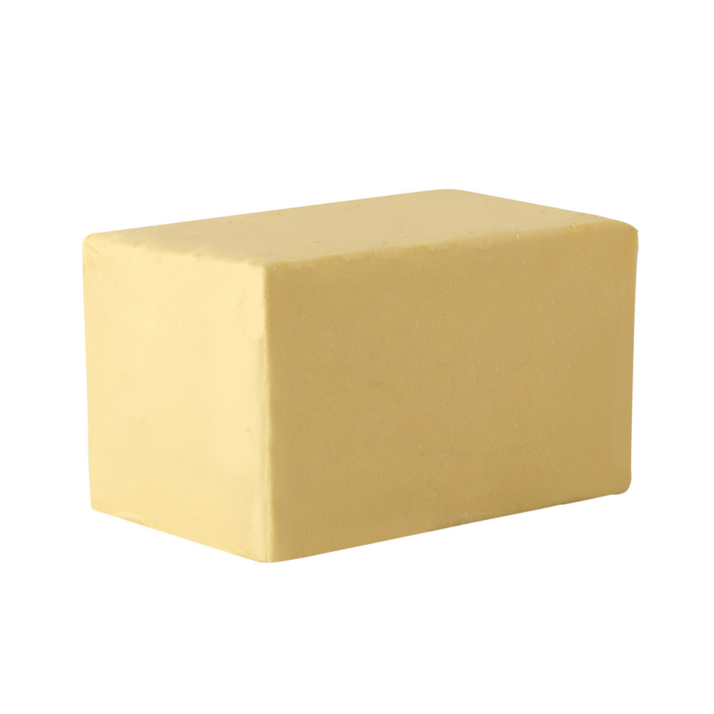
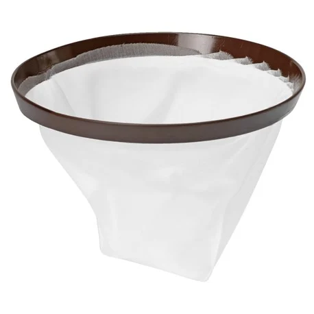
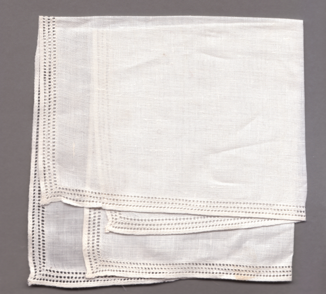
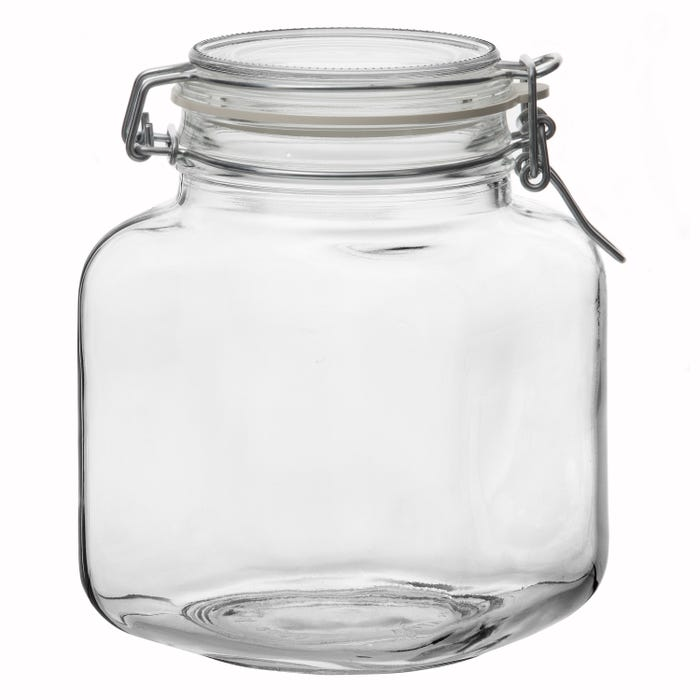
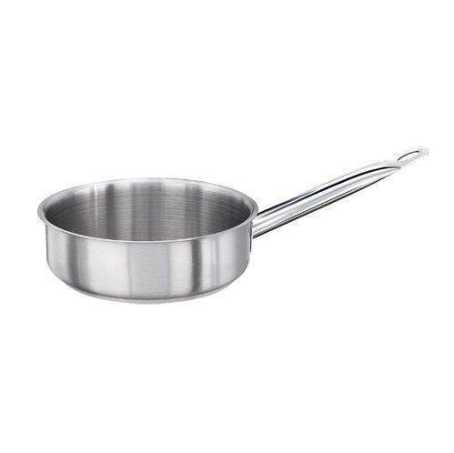
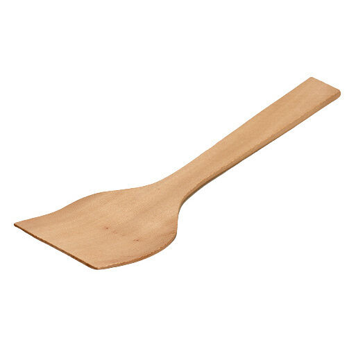
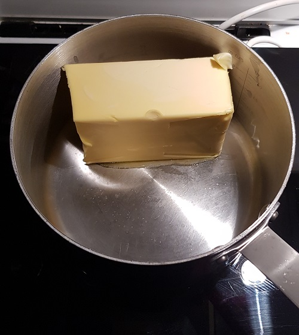
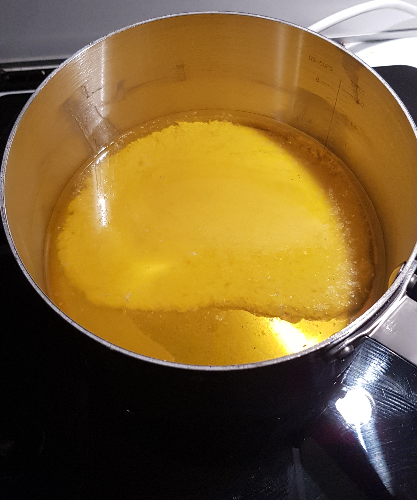
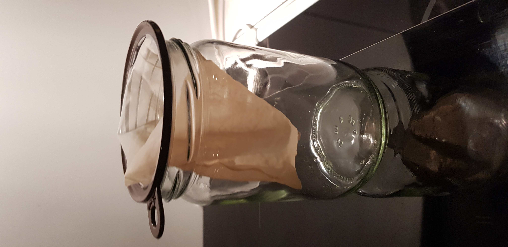
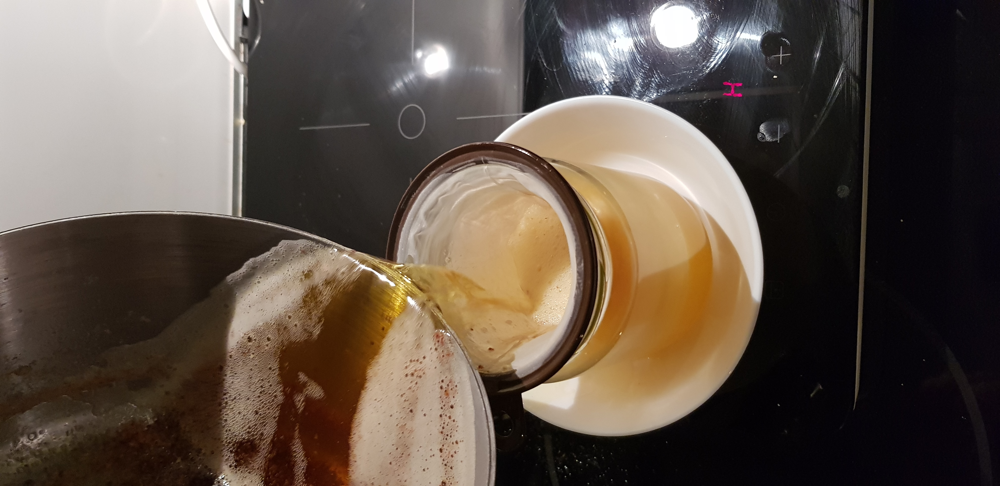

Ingredienser
Ghee är hundraprocentig smörfett som långkokats genom en särskild uråldrig indisk teknik. Under historien har den används ceremoniellt och som en väldigt effektiv matolja. Den stora fördelen med Ghee är att den har mycket högre rökpunkt än andra oljor (230 °C) vilket gör ghee till en mycket bättre olja för matlagning vid höga temperaturer då den inte lika lätt bränns vid. Den har också en god nötig doft och smak som påminner om knäck eller brynat smör och har många hälsofördelar. Ghee är en bra källa till intag av Vitamin A,C,D,K och E.
Nödvändig Utrustning för att tillaga:
- • Smör (100% Pastöriserad Grädde), Helst Osaltad 
- • Ett återanvändingsbart kaffefilter eller en handduk av linne för att sila smöret.  
- • En glasburk - Att förvara Ghee'n. 
- • Kastrull till Spis 
- • En sked eller spatel att röra om smörytan. 
Intruktioner:
- • Lägg smörblocket i en kastrull på låg värme och låt den långsamt smälta. 
- • När du ser en vit massa på botten och ett oljelager över så är det redo att kokas - det är mjölkproteinet och fettet som sepererats. 
- • Sen kan du börja koka på medelhög temperatur.
- • Använd en spatel eller en sked för att röra runt ytan försiktigt - undvik att röra om under ytan.
- • Fortsätt rör om i cirka ~10-15 minuter tills smöret börjar skumma bubblor, luktar brynt eller som "knäck" samt börjar få lite mörkbrun färg på botten.


Nästa Process:
- När du märker att smöret är klart så ska det silas genom ett återanvändingsbart kaffefilter eller en handduk av linne.
- - Detta är för att separera fettet från mjölkproteinet.
Mjölkproteinet som är bränt på botten går att äta och har en besk smak och kan användas som garnering för olika maträtter.


Sen är Ghee'n färdig!
Ghee kan förvaras i i rumstemperatur i ungefär en månads tid och i 3+ månader i kylskåp.
Bilden till vänster visar en nygjord eller smält ghee, till höger när den har stelnat av lägre temperatur.